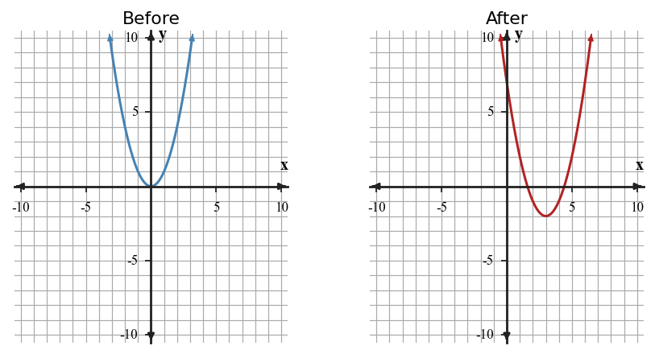

Start with what you can solve independently. Then find different classmates to compare reasoning or help with problems you have not completed. Record your own work and have each partner initial one problem they discussed with you.
If $f(x)=2^x$ has $y$-intercept $1$, what is the $y$-intercept of $g(x)=4\cdot 2^x$?
Graph $g(x)=|x-3|+2$ on the blank coordinate plane. Label the vertex and the slope on each side.

Compare the two graphs. Which key features are preserved, and which are changed by the transformation? Use at least two representations in your explanation.

Recommend whether a shifted quadratic or shifted absolute value model is better for a path with a single minimum at $(4,2)$ and equal slopes on both sides. Justify using key features and context.
Complete the square: $x^2+12x+20=(x+6)^2+\Box$.
Identify the axis of symmetry of $y=(x+2)^2-5$.
State why adding $25$ completes $x^2-10x$.
Solve or interpret the quadratic situation for Completing the Square. Show the algebra that supports your answer.
Solve $x^2+12x+20=0$ by completing the square.
Solve or interpret the quadratic situation for Completing the Square. Show the algebra that supports your answer.
Use vertex form to decide whether $y=x^2-6x+12$ has real zeros.
Solve or interpret the quadratic situation for Quadratic Formula. Show the algebra that supports your answer.
Use the quadratic formula to solve $x^2-3x-5=0$ exactly.
Strategy Construction. Analyze the quadratic evidence for Quadratic Formula. Write a conclusion and justify it with algebraic or graphical evidence.
Design a step-by-step solving strategy for $2x^2+9x-5=0$ that avoids unnecessary work. Then solve it.

Synthesize Across Representations. Create or revise a quadratic task for Completing the Square using the constraints below.
- Include at least two representations among equation, table, graph, or context.
- Make the solution method visible from structure, not from a hint.
- Interpret the solution in words.
For $x^2-10x+13$, synthesize a completing-square rewrite, a table around the vertex, and a context where the minimum value matters. Explain how each representation shows the vertex.
For each pair of consecutive outputs, write the ratio second output divided by first output. Then decide whether the full set supports an exponential relationship.
| $x$ | 0 | 1 | 2 | 3 | 4 |
|---|---|---|---|---|---|
| Output | 6 | 9 | 13.5 | 20.25 | 30.375 |
A relationship has outputs 12, 18, 27, 40.5 at inputs 0, 1, 2, 3. Explain why a constant difference test is not enough, then identify the constant ratio.
Compare the table and context below.
| Week | 0 | 1 | 2 | 3 |
|---|---|---|---|---|
| Views | 50 | 80 | 128 | 204.8 |
Context: A video starts with 50 views and grows by 60% each week.
Use the table and context together to write an equation, then explain how each representation supports the same model.
A student builds a model from the table but writes the multiplier as 0.2 because the first decrease is 18 and $18\div90=0.2$.
| Time | 0 | 1 | 2 | 3 |
|---|---|---|---|---|
| Amount | 90 | 72 | 57.6 | 46.08 |
- Revise the student's multiplier and explain the error.
- Write a short context that fits the corrected pattern.
- Predict the amount at time 4.